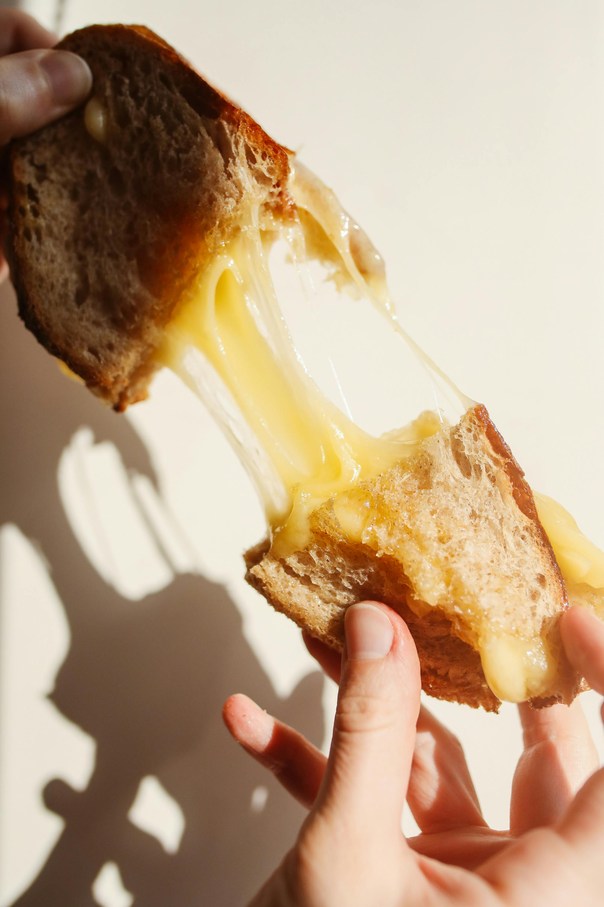

Grilled Cheese

Description
Grilled cheese is simple, but oh so comforting. This is my favorite basic version, but you can jazz it up with any melty cheese and your favorite bread! Feeling extra spicy? Throw in some crispy bacon, or even some sliced apples and you'll have yourself a gourmet treat.
Ingredients
- 2 slices of white bread
- About 1 tbsp of butter, melted
- 2 slices of muenster cheese
Steps
- Heat a non-stick skillet over medium-low heat.
- Brush one side of each slice of bread with the melted butter.
- Place both slices of cheese between the bread, butter side out.
- Place sandwich into the hot pan. Cook until brown to your taste, then flip.
- When second side is browned to your liking, remove from the pan. Enjoy!
Return to Home Page